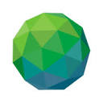
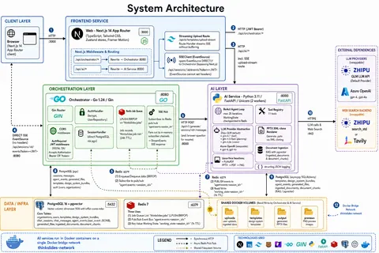
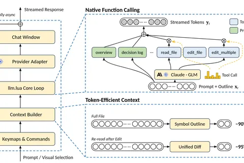

I am an M.S. student in Data Science at KAIST, advised by Professor Hayong Shin in the System Analytics Lab at KAIST. My general research focus is on LLM post-training methods, optimization (scheduling), and simulation particularly in the manufacturing domain.
I earned my B.Sc. (2025) in Computer Science from RWTH Aachen University. My bachelor thesis, written at the Chair of Software Engineering, studied voice input for structured data entry through LLMs. At RWTH's Learning Technologies group I was a research assistant in data engineering and a teaching assistant for data science. Before starting at KAIST, I spent a year in the IT department of the Green Climate Fund (UNFCCC) in Songdo as a Technical Business Partner, where I led IT initiatives as a Project Manager and had the opportunity to build data pipelines and AI tooling.
I have been making small games and applications since early middle school; for a full list, see my GitHub.
Outside of research, I like staying active and have played football all my life. I grew up raising multiple pets, and I enjoy installation art and galleries.
News
Started the M.S. in Data Science at KAIST, joining the System Analytics Lab.
Finished a year as Technical Business Partner at the Green Climate Fund (UNFCCC).
Finalist at Hack Seoul 2025 (AngelHack x Coupang) with an agentic product-insight API.
Completed my B.Sc. in Computer Science at RWTH Aachen University.
Research
Interests: LLM post-training methods, optimization (scheduling), and simulation, particularly in the manufacturing domain. Currently at the System Analytics Lab, KAIST.
[T1]
Enabling Voice Input for Data Entry through LLMs in MontiGem
Bachelor thesis, Chair of Software Engineering, RWTH Aachen University, 2024/25
Natural-language voice input for structured data entry in the MontiGem framework, using LLMs for intent parsing and slot filling.
The only robotics club at KAIST, with a 40-year track record of student-built robotic systems.
Working on Sim2Real transfer for robot control: training and validating policies in MuJoCo and NVIDIA Omniverse Isaac Sim before deploying them on hardware.

Technical Business Partner (Intern), IT
Jul 2025 - Jul 2026
Green Climate Fund (UNFCCC), Songdo, South Korea
Designed data pipelines and analytical models for climate-related forecasting and country vulnerability assessments (Microsoft Fabric, Kerchunk/NetCDF indexing, NLP).
Built an AI-assisted longlisting solution that improved process efficiency by over 3x while maintaining evaluation quality.
Led 18+ cross-departmental IT initiatives in parallel and planned the Fund's first Tech and AI Exhibition at Board 44, coordinating 8 departments and 16+ initiatives.
Developed enterprise Finance and HR platforms with Next.js, TypeScript, PostgreSQL, Azure, and SAML/SCIM.
Fullstack Developer (Intern)
Apr 2025 - May 2025
Teutoburger Ölmühle GmbH, Ibbenbüren, Germany
Rebuilt the company intranet from scratch with Angular and FastAPI, integrating directly with Microsoft NAV databases for real-time data.
Introduced GitHub for version control and a CI/CD pipeline with GitHub Actions.
Research Assistant, Data Engineering
Feb 2025 - May 2025
RWTH Aachen University, Learning Technologies
Designed and deployed containerized analytics engines and REST APIs (Python, Flask, Docker) for real-time analysis of student data across several German universities.
Refactored the analysis pipeline with multiprocessing-based load balancing, making processing up to 5x faster.
Teaching Assistant, Data Science
Oct 2024 - Apr 2025
RWTH Aachen University, Learning Technologies
Taught and mentored international groups of up to 40 students, with Python programming lessons focused on data analysis with Pandas.
Gave individual guidance, code reviews, and assignment feedback.
Robotics Club President
Jul 2019 - Jul 2021
Goethe-Gymnasium Ibbenbüren, Germany
Led weekly robotics sessions for up to 20 students, from programming basics to autonomous robotic systems.
Coordinated national-scale robotics competitions with schools across Germany.
Honors and competitions
2025Finalist, Hack Seoul 2025 (AngelHack x Coupang). Built an agentic product-insight API in 36 hours.
20257th place, RWTH Winter Game Jam, 48 hours, team of 5: Fleeting Fields.
Introduction to Programming - voluntary university course taken during high school
Selected projects

ThinkSlides: multi-agent presentation generation
Next.js, Go, Python
A multi-tenant app that generates branded PowerPoint decks with a ReAct agent, streaming its thoughts and tool calls over SSE. Five-service stack. The repository is private; access on request.

wellm.nvim
Lua
Fully asynchronous, streaming LLM integration for Neovim with native function calling. Symbol-outline injection cuts the context by about 90%.
Worker-versus-vehicle classification from HOG shape and color-histogram features, correlation-pruned, with no deep learning. A random forest reaches 90% against 80% for a linear SVM.